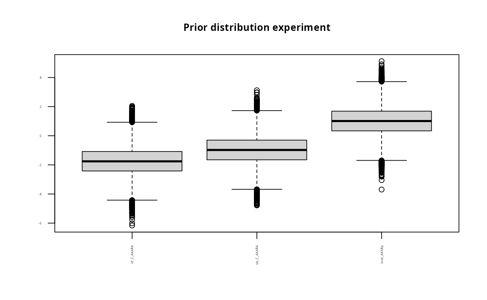
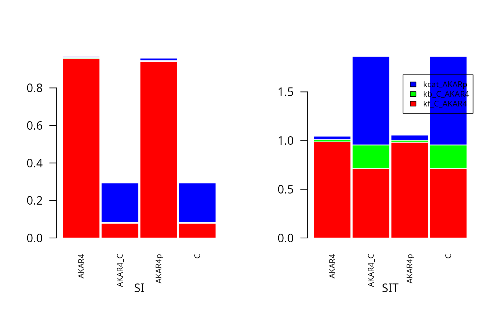

Global sensitivity analysis on AKAR4 - independent input factors
GSA_AKAR4.RmdThis article provides code do perform global sensitivity analysis with the Sobol-Saltelli method and the with the binning-approach.
Load the SBtab files, create ODE model code and load examples similar to the simulate the AKAR4 model deterministically example
modelFiles <- uqsa::uqsa_example("AKAR4")
SBtab <- SBtabVFGEN::sbtab_from_tsv(modelFiles)
#> [tsv] file[1] «AKAR4_100nM.tsv» belongs to Document «AKAR4»
#> I'll take this as the Model Name.
#> AKAR4_100nM.tsv AKAR4_25nM.tsv AKAR4_400nM.tsv AKAR4_Compound.tsv AKAR4_Experiments.tsv AKAR4_Output.tsv AKAR4_Parameter.tsv AKAR4_Reaction.tsv
model <- SBtabVFGEN::sbtab_to_vfgen(SBtab, cla=FALSE)
#> Document Name: AKAR4.
#> SBtab has 8 tables.
#> The names of SBtab[[1]]:
#> !Time, >AKAR4pOUT, ~AKAR4pOUT
#> !Name !KineticLaw
#> reaction_1 reaction_1 kf_C_AKAR4*C*AKAR4 - kb_C_AKAR4*AKAR4_C
#> reaction_2 reaction_2 kcat_AKARp*AKAR4_C
#> !ReactionFormula !IsReversible
#> reaction_1 C + AKAR4 <=> AKAR4_C 1
#> reaction_2 AKAR4_C <=> AKAR4p + C 0
#> There is no «Constant» Table in this model. This is OK.
#> There is no «Expression» Table in this model. This is OK.
#> compound names:
#> [1] "AKAR4" "AKAR4_C" "AKAR4p" "C"
#> Units:
#> [1] "micromole/liter" "micromole/liter" "micromole/liter" "micromole/liter"
#> ---
#> There is no «Input» Table in this model.
#> units in «!Unit» column:
#> [1] "micromole/liter" "1/(micromolarity*second)"
#> [3] "1/second" "liter"
#> automatically created sbml unit ids:
#> [1] "micromole_per_liter" "one_over_micromolarity_second"
#> [3] "one_over_second" "liter"
#> [1] "Compartment"
#> [1] "AKAR4"
#> unit of species 1 (AKAR4): «micromole_per_liter»
#> [1] "AKAR4_C"
#> unit of species 2 (AKAR4_C): «micromole_per_liter»
#> [1] "AKAR4p"
#> unit of species 3 (AKAR4p): «micromole_per_liter»
#> [1] "C"
#> unit of species 4 (C): «micromole_per_liter»
#> adding SBtab parameter 1: «kf_C_AKAR4»
#> unit of parameter 1 (kf_C_AKAR4): «one_over_micromolarity_second»
#> adding SBtab parameter 2: «kb_C_AKAR4»
#> unit of parameter 2 (kb_C_AKAR4): «one_over_second»
#> adding SBtab parameter 3: «kcat_AKARp»
#> unit of parameter 3 (kcat_AKARp): «one_over_second»
#> adding reaction 1: «reaction_1»
#> converting flux to mathml: «kf_C_AKAR4*C*AKAR4 - kb_C_AKAR4*AKAR4_C»
#> reaction rates in SBML need to have the unit «substance/time» rather than «concentration/time».
#> So conventional kinetics need to be multiplied by compartment volumes.
#> Since this model has only one Compartment, all kinetics will be multiplied by its volume for the SBML model.
#> [SBML] Reactants:
#> [1] "C" "AKAR4"
#> [SBML] Products:
#> [1] "AKAR4_C"
#> ---
#> [1] "C" "" "C"
#> [1] "AKAR4" "" "AKAR4"
#> [1] "AKAR4_C" "" "AKAR4_C"
#> adding reaction 2: «reaction_2»
#> converting flux to mathml: «kcat_AKARp*AKAR4_C»
#> reaction rates in SBML need to have the unit «substance/time» rather than «concentration/time».
#> So conventional kinetics need to be multiplied by compartment volumes.
#> Since this model has only one Compartment, all kinetics will be multiplied by its volume for the SBML model.
#> [SBML] Reactants:
#> [1] "AKAR4_C"
#> [SBML] Products:
#> [1] "AKAR4p" "C"
#> ---
#> [1] "AKAR4_C" "" "AKAR4_C"
#> [1] "AKAR4p" "" "AKAR4p"
#> [1] "C" "" "C"
#> output 1:
#> [1] "AKAR4pOUT"
#> unit of output 1 (AKAR4pOUT): «micromole_per_liter»
#> output 1 has formula:
#> [1] "108 + 380*AKAR4p"
#> 108 + 380 * AKAR4p
#> The sbml file has been named «AKAR4.xml».
#> class(IsConstant): logical.
#> [1] Formula Unit
#> <0 rows> (or 0-length row.names)
#> [1] Formula Unit
#> <0 rows> (or 0-length row.names)
#> character(0)
#> ---
#> character
#> Reaction 1:line (a->b): «C + AKAR4 » ←→ « AKAR4_C»
#> where a: [1] "C " " AKAR4 "
#> and b: [1] " AKAR4_C"
#> Products:
#> 1 × AKAR4_C (AKAR4_C is compound 2)
#> Reactants:
#> 1 × C (C is compound 4)
#> 1 × AKAR4 (AKAR4 is compound 1)
#> Reaction 2:line (a->b): «AKAR4_C » ←→ « AKAR4p + C»
#> where a: [1] "AKAR4_C "
#> and b: [1] " AKAR4p " " C"
#> Products:
#> 1 × AKAR4p (AKAR4p is compound 3)
#> 1 × C (C is compound 4)
#> Reactants:
#> 1 × AKAR4_C (AKAR4_C is compound 2)
#> Number of compounds: 4
#> Number of Reactions: 2
#> The vf content was written to: AKAR4.vf
#> The mod content was written to: AKAR4.mod
experiments <- SBtabVFGEN::sbtab.data(SBtab)
C <- uqsa::generateCode(model)
cat(C,sep="\n",file="./AKAR4_gvf.c")
modelName <- checkModel("AKAR4",modelFile="./AKAR4_gvf.c")
#> building a shared library from c source, and using GSL odeiv2 as backend (pkg-config is used here).
#> cc -shared -fPIC `pkg-config --cflags gsl` -o './AKAR4.so' './AKAR4_gvf.c' `pkg-config --libs gsl`##Create simulator We construct a simulator function and and test it on default parameter values.
s <- simcf(experiments,modelName,parMap=log10ParMap) # or simulator.c
p <- log10(SBtab$Parameter[["!DefaultValue"]])
names(p) <- rownames(SBtab$Parameter)
y <- s(p) # here the simulation happensSet meta-parameters for the global sensitivity simulation
nSamples <- 40000nSamples corresponds to the number of samples in M1 (or M2) of the Soboll-Saltelli approach..The number of simulations of the Sobol-Saltelli approach consists of 2*nSampels+nPars*nSamples number of simulations. In the binning approach below we use 2*nSamples number of samples (corresponding to 2*nSamples number of simulations) to use the same number of independent sample points as Sobol-Saltelli.
Construct parameter prior samples according to Sobol-Saltelli (M1, M2, N).
nPars <- length(p)
rprior <- rNormalPrior(p, array(1, nPars))
prior <- shs_prior(nSamples, rprior)
names(prior)
#> [1] "M1" "M2" "N"Plot parameter prior (M1)
title<-paste("Prior distribution experiment");
boxplot(prior$M1, main = title, names=names(p), las=2, cex.main=0.9, cex.axis=0.3)
#Simulate from the prior Set up simulator considering one experiment
expIdx <- 2 #experiment to look at
s <- simcf(experiments[expIdx],modelName,parMap=log10ParMap)
#Test by simulting the default parameter set:
p <- log10(SBtab$Parameter[["!DefaultValue"]])
names(p) <- rownames(SBtab$Parameter)
y <- s(p) # here the simulation happensUse states (compound concentrations) as output and look at one time point alone
T <-5 #timepoint to investigate
nStates <- dim(y[[1]]$state)[1]
fM1 <- t(s(t(prior$M1))[[1]]$state[,T,])
fM2 <- t(s(t(prior$M2))[[1]]$state[,T,])
fN <- array(NA, dim=c(nSamples,nStates, nPars))
for (i in 1:nPars){
print(i)
fN[,,i] <- t(s(t(prior$N[,,i]))[[1]]$state[,T,])
}
#> [1] 1
#> [1] 2
#> [1] 3#Calculate and plot sensitivity indexes Calculate sensitivity indexes for sobol-saltelli
SA <- shs_gsa(fM1,fM2,fN)#Plot first (SI) and total-order (SIT) sensitivity indexes for sobol-saltelli
cols=rainbow(3)
par(mfrow = c(1, 2))
barplot(t(SA$SI[,]),
col=cols,
border="white",
space=0.04,
cex.axis=1,
names.arg=dimnames(y[[1]]$state)[[1]],
cex.names = 0.7,
las = 2,
xlab="SI", las=2, cex.main=0.9)
barplot(t(SA$SIT[,]),
col=cols,
border="white",
space=0.04,
cex.axis=1,
names.arg=dimnames(y[[1]]$state)[[1]],
cex.names = 0.7,
las = 2,
xlab="SIT",
legend.text=SBtab$Parameter[,1],
args.legend = list(x = "topright", inset=c(0, 0.1), cex=0.7))
Plot all states and timeponts for the experiment
allTimesSample=s(t(prior$M2))[[1]]$state
par(mfrow = c(2, 2))
for (i in 1:4) {
matplot(experiments[[1]]$outputTime,allTimesSample[i,,1:500] , type = "l", lty = 1,
col = c("red", "blue", "green"),
ylab = "Y", xlab= dimnames(allTimesSample)[[1]][i])
}
Calculate first order sensitivity index (SI) based on binning approach
SIappr <-globalSensitivity(rbind(prior$M1,prior$M2), rbind(fM1,fM2), nBins = "Sturges")Plot SI for Sobol-Saltelli versus the binning approach
par(mfrow = c(1, 3))
barplot(t(SA$SI[,]),
col=cols,
border="white",
space=0.04,
cex.axis=1,
names.arg=dimnames(y[[1]]$state)[[1]],
cex.names = 0.7,
las = 2,
main="SI Sobol-Homma-Saltelli")
barplot(t(SIappr),
col=cols,
border="white",
space=0.04,
cex.axis=1,
cex.names = 0.7,
las = 2,
main="SI approximativt ")
barplot(c(0),
axes=FALSE,
col=cols,
border="white",
space=0.04,
font.axis=2,
legend.text=SBtab$Parameter[,1])
mtext(paste("Comparision GSA methods, sample size=",as.character(2*nSamples)), side = 3, line = -1.2, outer = TRUE)